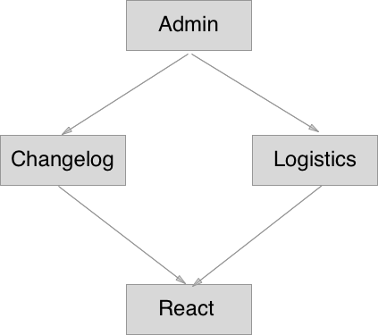
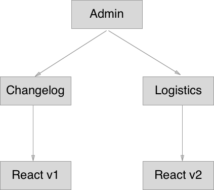
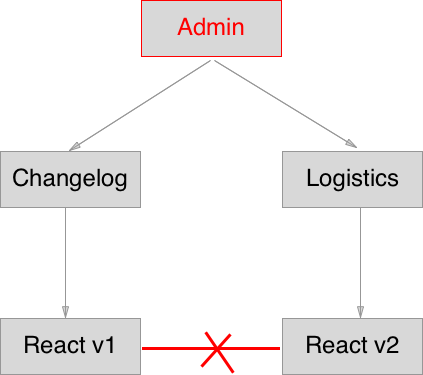

# FROM MONOLITH TO MONOREPO THROUGH MULTIREPO A quest for productivity Note: This is a highly controversial theme. I'll just try to explain my journey and the reasoning behind why me and other people choose this approach.
## The monolith > "A monolithic application describes a software application which is designed without modularity." \- Wikipedia Note: Modularity is desirable, in general, as it supports reusability. It is also deirable because it facilitates maintenance by modifying modules instead of the whole aplication.
## Starting point - Applications in ¨admin¨ repo - STM/ATM, Claims, Branch selector, random scripts ... - Applications in other repos - Eagle, Purchase App Note: This is how it looked like when I first landed in Auto1. A bunch of applications spread through admin and other repos.
## A lot of similarities - Similar third party dependencies (react, redux...) - Same programming languages (js, css, html...) - Handling application state (flux) - Handling HTTP requests - Handling translations Note: They were developed ina a pretty similar way but not exactly. Tis is what happens when you have developers in and out, whitout modularity in mind and no guidance whatsoever.
## Problems - No modularity - No reusability - Different approaches/implementations (confusion) - Thightly coupled code - Bad developer experience - One single build/deployment unit Note: But all of them were built from scratch because there was no modularity.
## The multirepo > Software architecture that achieves modularity by splitting application units/modules into <span style="color: orange;">separate repositories</span>. Note: So we thought it'd be a great idea to split our apps into small reusable modules and treating them as separate projects in their own repo.
## Pros - Modularity - Reusable code accross projects - Less codebase == less intimidating - Independent build/deploy Note: Now we have modularity and we are able to reuse our code across multiple projects. Every module is easier to to understand because it has less code and does one single thing. And by reusing our code we are also reducing our overall codebase.
## Cons - Easy to break other projects - Hard to do cross project changes / refactor - Hard to track and manage dependencies - Tend to loose scope of the whole app - Hard to find modules Note: But as it often happens in software development, there is no silver bullet and we have to pay the price for improvements. Read the cons. I think that a very common problem in software development ilustrates very well all of this points.
### Diamond dependency problem  Note: Admin depends on Changelog and Logistics and they depend on React
### Diamond dependency problem  Note: A new version ov React came out and we decide it'll be useful for Logistics.
### Diamond dependency problem <div style="display: flex; justify-content: space-around;">  <ul> <li>Easy to break other projects</li> <li>Hard to do cross project changes / refactor</li> <li>Hard to track and manage dependencies</li> <li>Tend to loose scope of the whole app</li> </ul> </div> Note: We may break other modules/projects because from within a repo we don't really know who else is using it. This can be solved by keeping backwards compatibility which creates technical debt and it may limit our possibilities. Another way to solve it is to enforce great a discovery culture in the company through great documentation. But still you can see how painful it would be to do cross module modifications and update dependencies. Very easy to forget that you are developing for admin.
<h2 style="color: orange;">Do we really need a repo for every single unit/module❔</h2> <h2 style="color: orange;">Is it helping to accomplish our goal❔</h2> Note: Well, we achieved modularity but at the cost of many drawbacks. We achieve modularity in another way?
## The monorepo > Architecture that focuses on improving management of big highly modular software ecosystems
## Pros - Test whole app - Easier cross project changes / recatoring - Better tooling - Implicit discovery culture - We can still build & deploy modules independently - Better understanding of the application as a whole Note: - Single test suite, static code analysis, etc... - One single commit - Easier too deveop tools for cross project tasks - Easier to find packages/modules/code
# Cons - Merge hell without trunk-based development - More intimidating codebase
## CONCLUSION <table> <thead> <tr> <th></th> <th>Atomic changes</th> <th>Modularity</th> </tr> </thead> <tbody> <tr> <td>Monolith</td> <td>üëç</td> <td>üëé</td> </tr> <tr> <td>Multirepo</td> <td>üëé</td> <td>üëç</td> </tr> <tr> <td>Monorepo</td> <td>üíÉ</td> <td>üíÉ</td> </tr> </tbody> </table> Note: Now I'm thinking about going back to admin repo and maybe joining all repos into one big Auto1 repo.
## Best practices enforced <ul> <li> Boost productivity & reduce code base <ul> <li>Modularise everything</li> <li>Loosely coupled modules</li> </ul> </li> <li> Make your life easier <ul> <li>Improve tooling (automation)</li> </ul> </li> <li> Safety first <ul> <li>Test everything</li> </ul> </li> <li>Think twice before creating a new repo</li> </ul>
## This is crazy noone does that!
## This is crazy noone does that! - Google
## This is crazy noone does that! - Google - Facebook
## This is crazy noone does that! - Google - Facebook - Twitter
## This is crazy noone does that! - Google - Facebook - Twitter - Digital Ocean
## This is crazy noone does that! - Google - Facebook - Twitter - Digital Ocean - Etsy
## This is crazy noone does that! - Google - Facebook - Twitter - Digital Ocean - Etsy - ...
## [The resource](https://github.com/babel/babel/blob/master/doc/design/monorepo.md)